Soundic（サウンディック）は、音楽と場所でつながるSNS。曲を「種」として地図に蒔くと、聴かれるほど育って花になります。好きなお店や公園を、そこで流れていた曲と一緒に紹介できます。
Soundic is a music × map social app. Plant a song as a "seed" on the map; it grows into a flower as people listen. Introduce your favorite bars, cafes and parks with the song that was playing there.
iOS 16 以上。Apple Music に登録している人はアプリの中でフル再生、未登録でも30秒の試聴で楽しめます。「種まき」の仕組みは特許出願中。
iOS 16 or later. Apple Music subscribers play full tracks in the app; everyone else hears 30-second previews. The seed mechanism is patent pending.
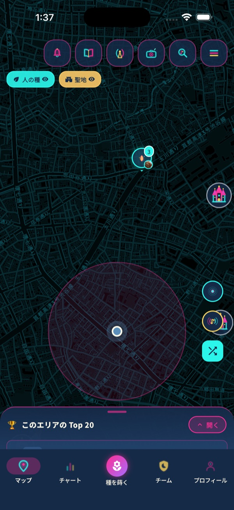
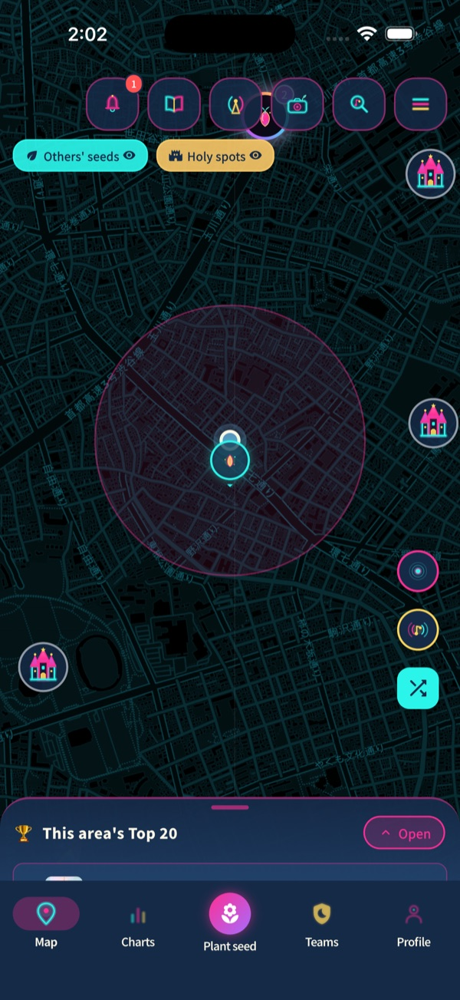
音楽と共に、あなたの好きを広めよう。
Spread what you love, together with music.
いま聴いている曲を、写真とひとことを添えて、いまいる場所に蒔く。聴かれるほど育って花になります。
Plant the song you're listening to, with a photo and a line, right where you are. It grows as people listen.
行きつけのバー・カフェ・居酒屋を、そこで流れていた曲と一緒に地図へ。写真を押すとその曲が流れます。
Put your usual bar or cafe on the map with the song that was playing there. Tap the photo and the song plays.
500m から 100km まで、いまこの街で蒔かれている曲のランキング。旅先のご当地の曲も見つかります。
From 500 m to 100 km: what a city is listening to right now. Find local favorites when you travel.
公園で同じ曲を蒔いた人は、知らない人同士でも1つのチーム。遠くの街からも、聴いて・いいねで応援できます。
Plant the same song in a park and strangers become one team. Support your team from far away by listening and liking.
写真とメッセージを添えて、曲を手紙のように贈る。相手がアプリを持っていなくても、リンクで届きます。
Send a song like a letter, with a photo and a message. It arrives by link even if they don't have the app yet.
蒔いた種や聖地を、ジャケットと QR 付きのネオンの画像に。Instagram ストーリーズや X にそのまま。
Turn a seed or a holy spot into a neon image with artwork and a QR code, ready for Instagram Stories and X.
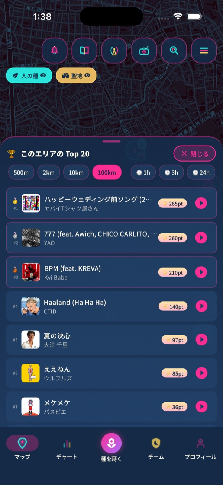
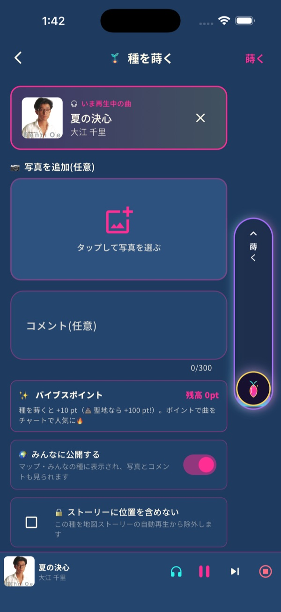
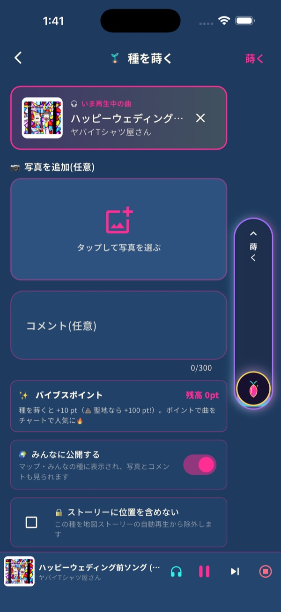
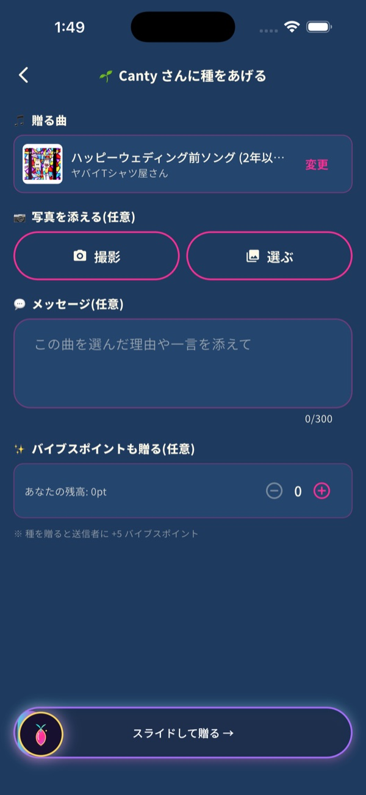
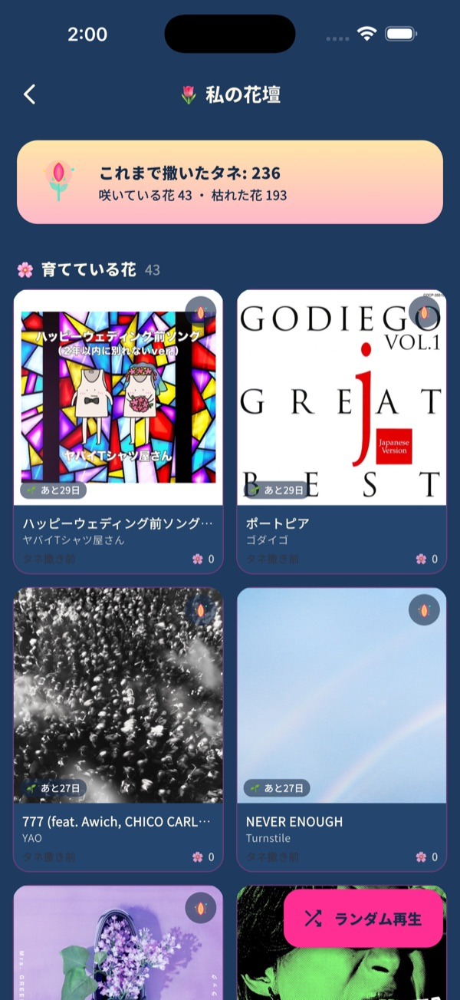
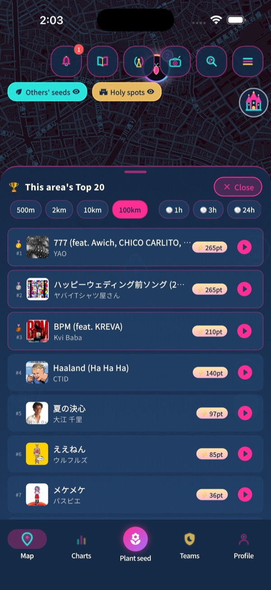
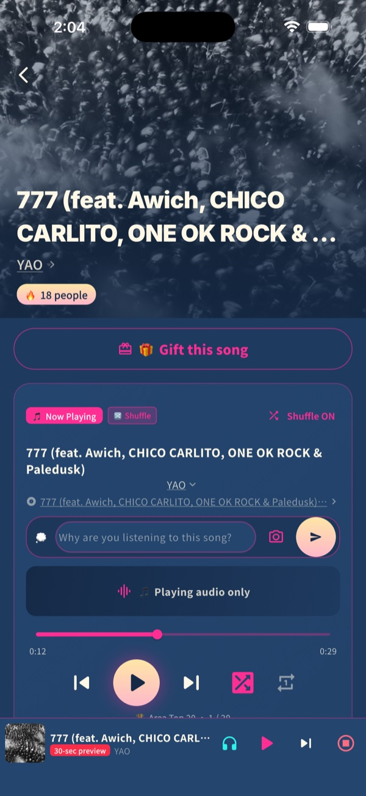
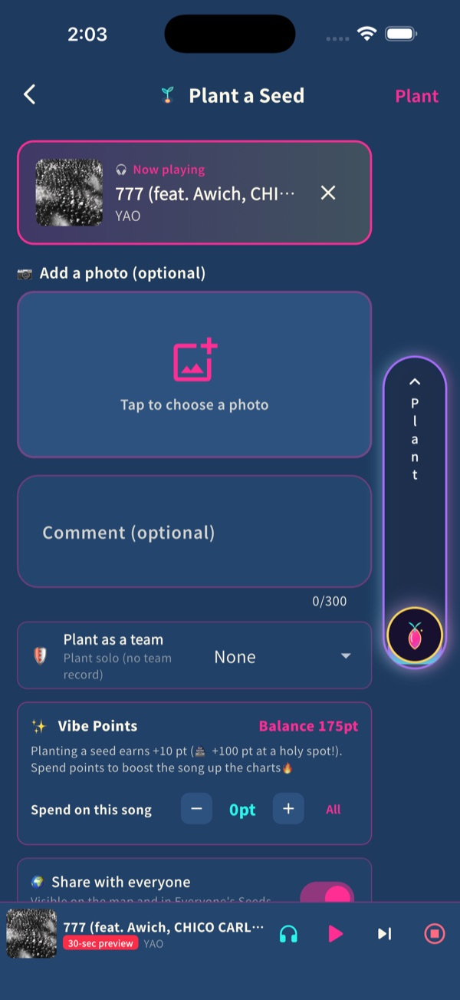
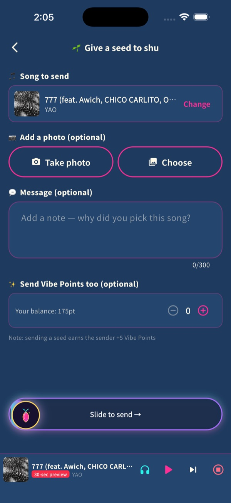
App Store から無料で。Apple Music の曲を検索するか、いま聴いている曲をそのまま。
Free on the App Store. Search Apple Music or use the song you're listening to.
いまいる場所に種が蒔かれます。場所は約100m ぼかして表示されるので安心です。
The seed lands where you are. Locations are blurred to about 100 m for privacy.
地図やランキングから気になる曲を聴くと、その種が育ちます。公園なら聖地に。
Listening to seeds on the map makes them grow. In a park, they can become a holy spot.
テレビ番組を作ってきた個人開発者が、月曜に開発日誌、木曜に使い方ガイドを note に書いています。短い使い方動画は毎日。
Made by a solo developer who directs TV shows. Dev diary on Mondays, how-to guides on Thursdays (note), short videos daily.
使えます。曲は30秒の試聴で聴けます。Apple Music に登録している人は、アプリの中でフル再生できます。
いいえ。蒔いた場所は約100m ぼかして表示されます。投稿は自分だけに見える設定もでき、通報とブロックもあります。
いまは iPhone（iOS 16 以上）だけです。Android 版は準備中です。
無料です。アプリ内課金もありません。
No. Everyone can hear 30-second previews. Apple Music subscribers play full tracks inside the app.
No. Planted locations are blurred to about 100 m. Posts can be private, and every post can be reported or blocked.
iPhone only for now (iOS 16 or later). Android is in preparation.
Free, with no in-app purchases.